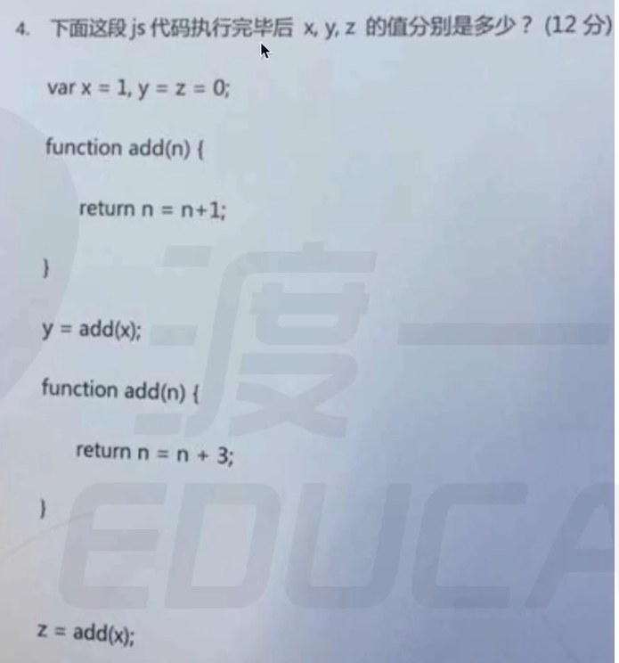

- 题1
str:”abc1”
typeof(str):”string”
test.length:系统生成对象new String(“string”).length == 6; delete
test.sign:系统生成对象new String(“string”);向这个对象中添加属性及属性值，delete
console.log(test.sign):系统生成对象new String(“string”);访问对象的sign属性，结果是undefined
系统每次删除对象之后再生成的对象都是新对象
- 题2
答案：A
原因：实参传值给形参，但是函数体里边没有用到形参
- 题3
考点：闭包，内部函数被隐式的return this保存到了外部
答案：1 2 1
原因：oPerson.say():执行函数sss，产生sssAO{}放到作用域链最顶端，沿着作用域链往下找，a = 1;第二次执行时，a = 2;
注意：构造函数中的 a，对象中没有，对象中只有this的内容
- 题4

答案：1 4 4
原因：
GO：{ |
- 执行：
1. z = 0; |
- 题5
- 题6
- 题7
- 题8

- 题9
- 题10
- 控制台输入
person.name，应该输出什么
答案：”cherry”
解析：控制台输入的内容相当于是在程序逻辑最后面的代码块，所以”cherry”会覆盖”sunny”
- 题11
- 控制台输入
person.name，person.name应该输出什么
答案：”cherry”
解析：控制台输入的内容相当于是在程序逻辑最后面的代码块，所以”cherry”会覆盖”sunny”
- 题12
- 答案：”sunny”
- 解析：一开始，函数原型的name是”sunny”，用构造函数构造对象后，对象person继承了”sunny”，然后函数原型指向了一个新的对象（因为函数原型是一个对象，是引用值），此时person已经继承了原先的对象，即使函数原型的指向发生了变化，但是也不能修改了
- 题13
答案：”cherry”
解析：在对象person还没有生成之前，函数原型的引用值就已经发生了变化，所以对象person继承的是函数原型修改之后的内容
- 题14
- 控制台输入son.num ++,求son.num
function Father() { |
答案： 101
解析： son没有num，所以继承了father的num，然后执行son.num ++，相当于将原始值赋值给son.num，就是给son增加了一个属性
，控制台输入son之后，可以发现son内部多了一个num属性
- 题15
- 控制台输入person.sayName,输出什么？
Person.prototype = { |
答案： b
解析： *.sayName,sayName里边的this指向的是，谁调用的sayName(),this就指向谁
情况一： 当构造函数Person函数体内没有内容时，person继承了sayName，所以
person.sayName();里面的this指向person，此时person的name来自于Person.prototype，也是继承来的情况二： 当构造函数Person函数体内有name时，那就用自己的
- 题16
- 执行person.eat();person的输出结果？
Person.prototype = { |
- 答案：
Object { |
- 题17
- 题18
- 题19
- 思考：nextElementSibling,previousElementSibling这两种方法在IE9及IE9以下不能用，怎么改进？
- 题20
- 题21
- 题22
- 题23
- 题24